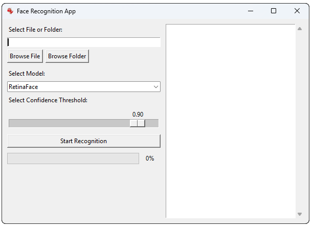

Getting Started
Welcome to the Face Recognition App user guide! This manual will help you navigate the graphical user interface (GUI) and make the most of our face recognition software.
Installation
To install the Face Recognition App:
- Download the installer from our official website.
- Run the installer and follow the on-screen instructions.
- Once installed, you'll find the application in your Start menu or Applications folder.
Launching the Application
To start the Face Recognition App:
- Locate the application icon in your Start menu or Applications folder.
- Double-click the icon to launch the application.
- The main interface will appear, ready for use.
Interface Overview

The Face Recognition App user interface
The main interface consists of several key areas:
- File/Folder Selection: Choose images or videos for processing.
- Model Selection: Pick the face recognition model to use.
- Confidence Threshold: Adjust the detection sensitivity.
- Start Button: Begin the recognition process.
- Results Display: View the output of the recognition process.